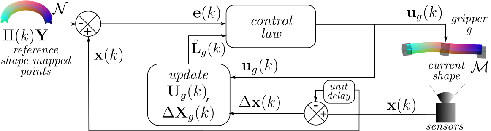
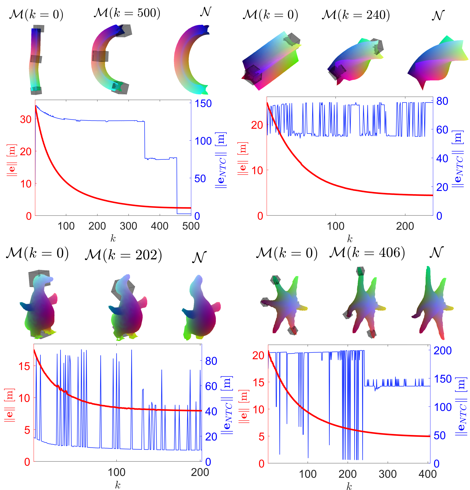
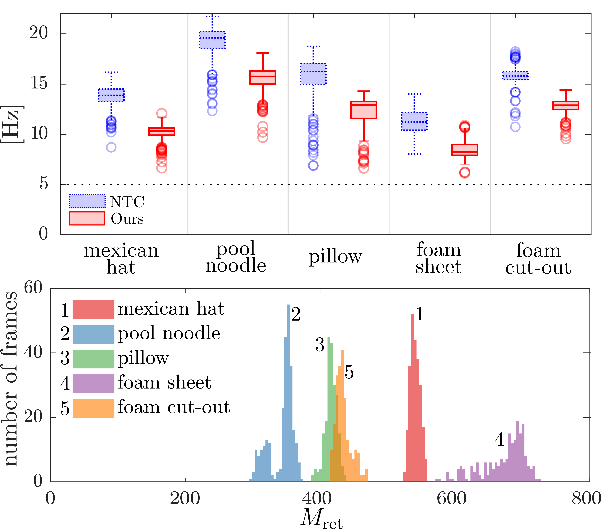
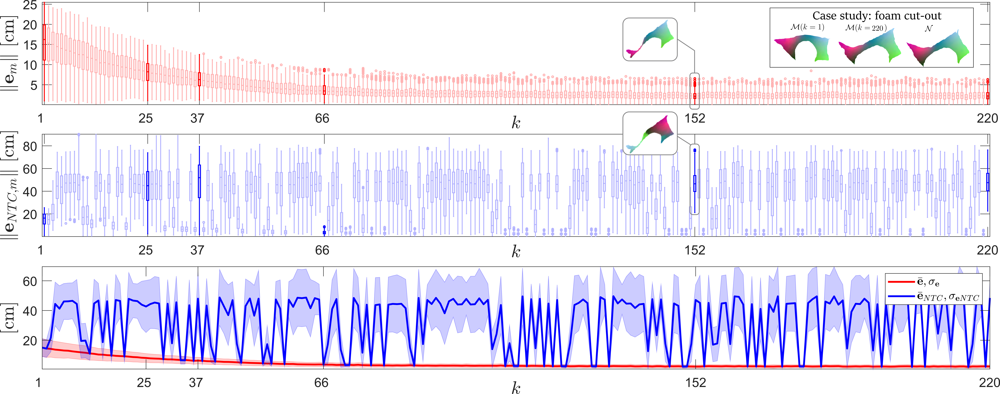

4 Shape control application
In this section, we validate our proposed method for time-consistent surface mapping (presented in section 3) within a shape control framework. Laplace-based eigenbases are useful for solving surface mapping, as they are invariant to isometries. However, this same characteristic makes them inappropriate for defining an error metric within the shape control context: different configurations of the 3D embedding can share the same intrinsic features (e.g. aspects such as concavity or convexity may not be distinguishable). We therefore propose defining a shape error based on extrinsic tracked point positions \(\mathbf{X}(k)\) from (15), the target shape nodes \(\mathbf{Y}\), and our computed maps \(\Pi(k)\). We define a shape error in matrix form as
\[ \mathbf{E}(k)=\mathbf{X}(k)-\Pi(k)\mathbf{Y},\, \tag{20} \] with \(\mathbf{E}(k)\in\mathbb{R}^{M\times 3}\). Rearranging \(\mathbf{E}(k)\) in column form, we define the error vector \(\mathbf{e}(k)\in\mathbb{R}^{3M}\):
\[ \mathbf{e}(k)=[\mathbf{e}^\intercal_1(k),\dots, \mathbf{e}^\intercal_m(k), \dots, \mathbf{e}^\intercal_M(k)]^\intercal, \tag{21} \] being \(\mathbf{e}_m(k)\in\mathbb{R}^3\) the error vector of the \(m\)-th surface point.
4.1 Control law
We now present the robot-based shape control law for reducing \(\left \|\mathbf{e}\right\|=\sqrt{\mathbf{e}^\intercal\mathbf{e}}\) and thus bringing a deformable object shape closer to the desired target shape (Fig. 7). The robot setup involves grippers \(g=1,...,G\) that can perform 6 degrees of freedom actions \(\mathbf{u}_g=(\Delta \mathbf{t}^\intercal_g,\Delta\mathbf{r}^\intercal_g)^\intercal\), where \(\Delta \mathbf{t}_g\in \mathbb{R}^3\) is the translation increment and \(\Delta \mathbf{r}_g\in \mathbb{R}^3\) is the change in orientation represented with the Rodrigues' rotation vector. We rearrange \(\mathbf{X}(k)\) to define the column vector \(\mathbf{x}(k)\in \mathbb{R}^{3M}\) and its variation along iterations \(\Delta \mathbf{x}(k)=\mathbf{x}(k)-\mathbf{x}(k-1) ,\,\Delta \mathbf{x}(k)\in \mathbb{R}^{3M}\). If we actuate the grippers simultaneously, we cannot estimate the contribution to \(\Delta \mathbf{x}(k)\) that each gripper generates. For this reason, we propose operating them sequentially.
In order to design our control law, we define two data buffers (or historic information) for each gripper. One contains previous gripper \(g\) actions as \(\mathbf{U}_g(k)=(\mathbf{u}^1_g,...,\mathbf{u}^b_g,...,\mathbf{u}^B_g),\mathbf{U}_g(k)\in\mathbb{R}^{6\times B}\), being \(b=1,...,B\) the buffer index and \(B\in\mathbb{N},B\geq 6\) the buffer size. The other data buffer contains the change in the state (i.e. \(\Delta \mathbf{x}\)) that each action \(\mathbf{u}^b_g\) has generated, i.e. \(\Delta\mathbf{X}_g(k)=(\Delta \mathbf{x}^1_g,...,\Delta \mathbf{x}^b_g,...,\Delta \mathbf{x}^B_g),\Delta\mathbf{X}_g(k)\in\mathbb{R}^{3M\times B}\). Grippers actuate sequentially and thus buffers (note that they depend on \(k\)) are updated cyclically, i.e. each iteration \(k\) a different gripper actuates the system and thus its data buffer is updated. Buffers are updated by removing the oldest measurement \(B\), shifting all the remaining measurements one position and adding the new measurements as \(\mathbf{u}^1_g=\mathbf{u}_g(k)\) and \(\Delta \mathbf{x}^1_g=\Delta\mathbf{x}(k)\). The initialization of the buffers is performed by actuating \(B\geq 6\) times each gripper individually with small actions that ensure small deformations and full rank of \(\mathbf{U}_g(k=1)\).
We use the data buffers to estimate an interaction matrix \(\mathbf{L}_g\in\mathbb{R}^{3M\times 6}\) that defines the dynamics of the system as \[ \Delta \mathbf{x}=\mathbf{L}_g\mathbf{u}_g. \tag{22} \]
The estimation is: \[ \hat{\mathbf{L}}_g=\Delta\mathbf{X}_g\mathbf{U}^{\intercal}_g\left( \mathbf{U}_g\mathbf{U}^{\intercal}_g-\gamma\mathbf{I}_{6} \right)^{-1}, \tag{23} \] where, for clarity, dependence on \(k\) has been omitted. Parameter \(\gamma>0\) (\(\gamma\) very small) is the Tikhonov's regularisation parameter and enhances the system's stability in those cases in which \(\mathbf{U}_g\mathbf{U}^{\intercal}_g\) happens to be near-singular. Matrix \(\hat{\mathbf{L}}_g(k)\in\mathbb{R}^{3M\times 6}\) allows us to define the control law by using its left pseudo-inverse \(\hat{\mathbf{L}}^{+}_g\in\mathbb{R}^{6\times 3M}\): \[ \mathbf{u}_g=-\alpha\hat{\mathbf{L}}^{+}_g\mathbf{e}, \tag{24} \] where \(\alpha>0\) is the control gain. For good-enough estimations of \(\mathbf{L}\) and considering \(\Pi(k)\) in (20) is a time-consistent selector matrix of static reference points \(\mathbf{Y}\), the error dynamics are obtained by substituting (24) in (22): \[ \Delta\mathbf{e}=\Delta\mathbf{x}=-\alpha{\mathbf{L}}_g\hat{\mathbf{L}}^{+}_g\mathbf{e}=-\alpha\mathbf{e}, \] and thus we conclude local exponential stability.

4.2 Simulation results

We performed several tests using the ARAP (Sorkine and Alexa, 2007) deformation model to compute the object evolution. In Fig. 8, we present two simulations with synthetic shapes generated using Blender (both the initial and the target shapes) and two simulations that involve shapes obtained from real data: the duck is obtained from RGB-D images whereas the sea star is obtained from 3D scanner data. All used meshes contain around \(100\) to \(500\) nodes. In each simulation result we begin by showing the initial, final and target shape configurations (first three elements).
The plots in Fig. 8 present the error \(\left \| \mathbf{e} \right\|\) evolution (left axis) along with another error \(\left\| \mathbf{e}_{NTC}\right\|\) (right axis, note the different scale). Error \(\left\| \mathbf{e}_{NTC}\right\|\) (non-time-consistent error) illustrates the evolution of the error according to the ZoomOut mapping method (Melzi et al., 2019). That is, the ZoomOut surface maps (not time-consistent) have been computed on surface data recorded from the simulations and experiments. Such simulations and experiments have been performed by feeding control law (24) with the error \(\mathbf{e}\) in (21), generated through our time-consistent mapping method. No shape control has been performed with error \(\mathbf{e}_{NTC}\) generated from ZoomOut maps, as its discontinuities and time inconsistencies do not allow the computation of deformation Jacobians nor provide a continuous and consistent error signal. Note that our mapping comparisons with ZoomOut are not a standard bench-marking evaluation, as ZoomOut was not created to achieve time consistency nor to deal with non-synthetic data. Instead, our goal is to underscore the significance of time consistency and robustness of surface maps for shape control and to demonstrate that our method meets these requirements as it allows for the computation of (23) and provides a proper error signal for (24). The simulations along with their associated action plots are shown in the accompanying video.
In the simulations, note how the proposed control reference \(\left\| \mathbf{e}\right\|\) is smooth and continuous (deformable objects constitute highly under-actuated systems and thus \(\left\| \mathbf{e}\right\|\) does not usually reach zero). On the other hand, error \(\left\| \mathbf{e}_{NTC}\right\|\) presents discontinuities and noisy behaviour, leading to the conclusion that the control reference it represents would not be suitable for a shape control law. It is interesting to see how in the first experiment (top left) in Fig. 8, \(\left\| \mathbf{e}_{NTC}\right\|\) still manages to stabilise at certain times, however, it remains around larger error values (\(\sim 100 \) [m]) until the shape has almost converged to the solution. The second simulation (top right) presents more complex symmetries (axial-wise) and thus \(\left\| \mathbf{e}_{NTC}\right\|\) oscillates around a relatively small range of values. The third simulation in Fig. 8 (bottom left) presents certain stability of \(\left\| \mathbf{e}_{NTC}\right\|\) at the beginning as, at a certain range, \(\left\| \mathbf{e}_{NTC}\right\|\) is coincident with \(\left\| \mathbf{e}\right\|\) (axes have different scales). However, large discontinuous oscillations appear during the rest of the deformation process. The fourth simulation (bottom right) presented in Fig. 8 begins with a highly symmetric shape (radial symmetry), however, as the deforming shape gets closer to the target shape (which presents fewer symmetries), \(\left\| \mathbf{e}_{NTC}\right\|\) presents discontinuities in a narrower range of values. Note that the axis of \(\left\| \mathbf{e}_{NTC}\right\|\) contains large values compared to that of \(\left\| \mathbf{e}\right\|\). This is due to the fact that, without the time-consistent approach, functional maps might be inverting, flipping or rotating the shape mapping completely between iterations and thus generating large variations in distances between matched points in the 3D embedding.

4.3 Experiments

This section describes five experiments involving the manipulation of objects with different shapes and materials. The setup (outlined in Fig. 1) includes two ABB IRB120 industrial robots with pneumatic grippers, a diffused light source, and an Intel Realsense D415 RGB-D camera. Objects are retrieved using colour-based segmentation in the CieLAB colour space; the first homogeneously sampled object points constitute the points to be tracked in subsequent iterations (i.e., \(\mathbf{X}(k=1)=\mathbf{X}_{ret}(k=1)\)). To ensure that the target shapes were feasible given the robot's workspace limitations, they were pre-acquired by teleoperating the robots. The code was implemented using Matlab R2022b, and the computer-to-robot communication was established via TCP/IP protocol. The experiments were conducted on an Intel(R) Core(TM) i7-8565U CPU with 1.99 GHz and 16 GB of RAM.
The experiments are illustrated in Fig. 9 to 15, where Fig. 9 and 15 show comparative analysis and Fig. 10 to 14 presents the experiments showing the same element distribution. On the top left, three meshes depict the initial, final, and target shape, along with the surface maps generated by our proposed method (colour map on the mesh). The same three meshes are shown in different colours (gray, red, and blue) and from three different viewpoints (front, side, and top) in the top right corner. On the bottom left, an image sequence displays the segmentation of the object on the acquired RGB images. Nearby the RGB images, the surface maps obtained using the ZoomOut method (\(\Pi_{NTC}\)) and our proposed method (\(\Pi\)) are depicted on the different state meshes as colour maps. On the right, three plots illustrate the evolution of the control process. Similar to the error plots in the simulations, the first plot on the right shows the evolution of the error associated with our mapping method, i.e., \(\left\| \mathbf{e}\right\|\) (left axis, red), and the error associated with the non-time-consistent maps \(\Pi_{NTC}\), i.e., \(\left\| \mathbf{e}_{NTC}\right\|\) (right axis, dashed blue line, note the different scale). Below the error plot, two action plots, one for the translation component and the other for the rotation component of the action, display the evolution of actions \(\mathbf{u}_g=(\Delta \mathbf{t}^\intercal_g,\Delta\mathbf{r}^\intercal_g)^\intercal\) for both robots (\(x,y\) and \(z\) components of translation and rotations depicted in red, green, and blue respectively). For a better understanding of the experiments, these results are presented in the attached video.
Fig. 9 provides information on the processing frequency and the number of nodes processed in each experiment. Our method is more complex, which leads to a lower processing frequency as compared to the non-time-consistent method. However, it is worth noting that, in our method, all the processed frames stay over the minimum frequency of 5 [Hz] (value highlighted with a dotted line in the figure). In those sequences of \(M_{\mathrm{ret}}\approx 400\) (e.g., the pool noodle, the pillow, and the foam cut-out), sometimes the processing frequency rises up to 15 [Hz].

4.3.1 Mexican hat (Fig. 10)
The flat object used in this experiment serves as an excellent example of a texture-less object that requires a 3D analysis method like the one proposed in this paper. This object lacks visual texture and has limited geometry defining features due to its radial symmetry, which makes it unsuitable for methods that rely on extracting 3D features. In this particular experiment, only the right gripper is active (the left gripper is fixed, as it is near a singular robot configuration). Despite these challenges, our proposed method successfully manipulates the hat towards the desired target shape. Note how the time inconsistent maps (obtained from directly applying ZoomOut at each iteration) not only lead to large variations derived from the symmetries of the shape but also find difficulties in converging to a map with proper continuity (see iterations \(k=52\) and \(k=196\)).

4.3.2 Pool noodle (Fig. 11)
4.3.3 Pillow (Fig. 12)
The initial shape of the pillow, as it presents a certain inclination with respect to the camera, leads to temporary gaps on both sides of the pillow's associated mesh. This poses a challenge for the generation of surface maps, as there can be large variations of area or mesh shapes between consecutive iterations. Our time consistent mapping method handles this difficulty properly. The error \(\left\| \mathbf{e}\right\|\) appears noisier in this experiment due to the smaller range of values covered by the error plot and the similarity in scale between the camera noise, mesh variations, and error values.

4.3.4 Rectangular foam sheet (Fig. 13)
This shape's symmetries (with four 90º corners and straight sides) pose a challenge for surface mapping. The time inconsistent method struggles to converge to a continuous map, with discontinuities at certain frames (e.g., \(k=96\) or \(k=203\) in the sequence). Even when producing continuous maps, it oscillates between symmetric solutions (e.g., \(k=22\) versus \(k=48\)). In this experiment, although our mapping method works properly, the proposed control law does not converge as effectively as in other experiments. See on the top right meshes that a significant portion of the final mesh does not overlap with the target mesh. This is due to the local nature of the Jacobian estimation that, although being updated, remains a rough estimation of the object's complex non-linear deformable behaviour.

